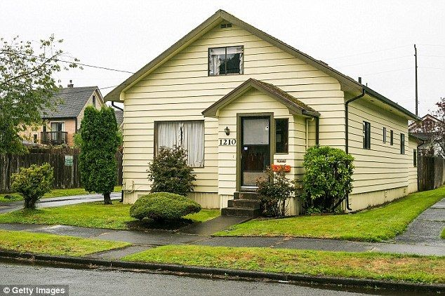
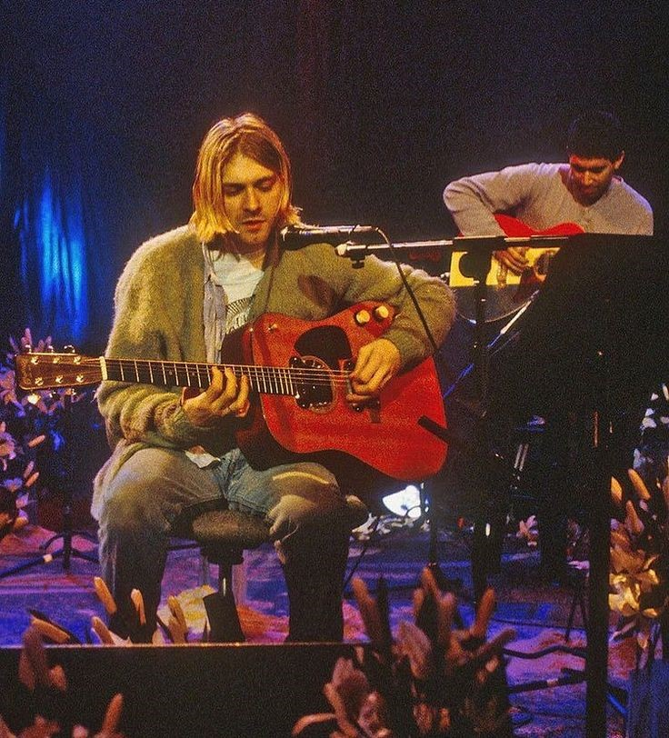
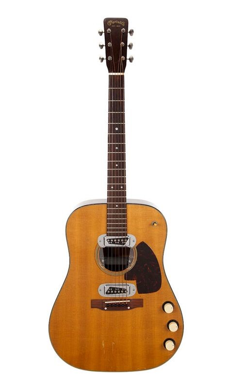

Curiosidade sobre o Nirvana
Origem do nome da Banda:
Antes de se chamarem Nirvana, a banda teve outros nomes, como Skid Row, Fecal Matter e Ted Ed Fred.
Kurt Cobain escolheu "Nirvana", porque queria um nome bonito e pacífico, contrastando com a agresividade de outras bandas de punk rock.
Gravação de "Nevermind":

O álbum Nevermind foi produzido com um orçamento relativamente baixo, de cerca de 65 mil dólares.
Apesar disso,vendeu mais de 30 milhões de cópias em todo o mundo e é considerado um dos álbuns mais influentes da história do rock.
"Smells Like Teen Spirit" e o Desodorante:

O título do maior hit do Nirvana surgiu de uma brincadeira de Kathleen Hanna, vocalista do Bikini Kill, que escreveu “Kurt smells like Teen Spirit” (Kurt cheira a Teen Spirit) na parede de seu quarto.
Ela estava se referindo a uma marca de desodorante, mas Kurt achou que tinha um significado mais profundo.
A Casa em Aberdeen:
A casa onde Kurt Cobain cresceu em Aberdeen foi colocada á venda diversas vezes ao longo dos anos e é frequentemente visitada por fãs da banda.
Em 2014, ela foi incluida no Registro de Lugares Históricos do Estdado de Washington.
Shows Memoráveis:
O Nirvana é lembrado por seus shows intensos, incluindo a performance no MTV Unplugged em 1993, onde tocaram versões acústicas de suas músicas e covers de artistas como David Bowie e Lead Belly.
Esse show foi gravado em um único take e se tornou um dos álbuns ao vivo mais icônicos da história.
"In Utero" Censurado:

O álbum In Utero enfrentou censura em algumas lojas dos Estados Unidos por causa de sua arte de capa e letras.
Mesmo assim, estreou no primeiro lugar da Billboard 200 em 1993.
O Início com Sub Pop:

O Nirvana assinou seu primeiro contrato com a gravadora independente Sub Pop, que foi essencial para moldar o som do grunge em Seattle.
Seu primeiro single,"Love Buzz," foi lançado por essa gravadora.
Legado do Grunge:
Embora muitas bandas do movimento grunge surgissem na mesma época, como Pearl Jam e Soundgarden o Nirvana foi a banda que colocou o gênero no mainstream, sendo creditada como a principal respónsavel pelo auge do grunge nos anos 90.
Kurt e o Desinteresse pela Fama:
Kurt Cobain frequentemente expressava desinteresse pelo estrelato.
Ele acreditava que o sucesso comercial comprometia sua arte e criticava o público que não entendia as mensagens de suas músicas.
Em uma das últimas entrevistas, em 1993, Kurt reflete nessa parte sobre como a felicidade pode estar nas pequenas coisas.
Ele se mostra humilde e sem deslumbre pela fama, mas reconhecendo em outro trecho o privilégio que possui e as coisas boas que vieram com isso.
Kurt tinha uma visão única sobre as coisas e uma preocupação genuína com sua música e a autenticidade das coisas.
A nfluência de Lead Belly:
Kurt Cobain era fã do cantor de blues Lead Belly e custumava mencionar que queria comprar o violão dele, mas não tinha os US$ 500 mil necessários.

Dave Grohl, Pós-Nirvana:

Após o fim do Nirvana, o baterista Dave Grohl formou o Foo Fighters,que se tornou uma das maiores bandas de rock das décadas seguintes.
Homenagem no Hall da Fama:
Quando o Nirvana foi introduzido no Hall da Fama do Rock and Roll em 2014, as músicas performadas por artistas com Joan Jett,Kim Gordon(Sonic Youth),St. Vincent e Lorde em homenagem a Kurt Cobain.
O Violão Icônico do MTV Unplugged:
O violão usado por Kurt Cobain no MTV Unplugged foi vendido em 2020 por mais de 6 milhões de dolares, tornando-se o violão mais caro já vendido em um leilão.
A Marca de Roupa do Nirvana:

O famoso logotipo do Nirvana, o smiley face com os olhos cruzados e a lingua de fora, foi criado por Kurt Cobain e se tornou um dos simbolos mais reconhecidos do rock.
"Something in the Way" em Batman:

A música "Something in the Way", do álbum Nevermid foi usada no filme The Batman(2022), ajudando a apresentar a banda a uma nova geração de fãs.
A escolha da faixa é ainda mais especial porque Batman era o super-herói favorito de Kurt Cobain, refletindo seu fascínio por personagens complexos e sombrios.
Kurt Cobain quando criança fantasiado de Batman: